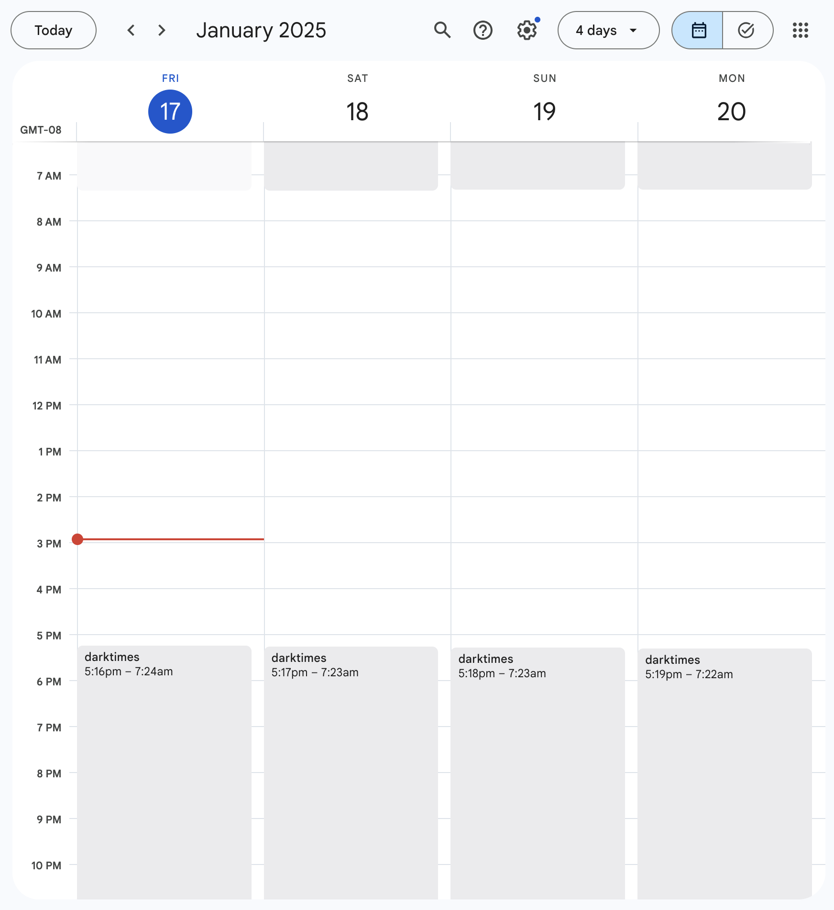

darktimes calendar
todo: add github link
An embarrassingly simple script, but something that I still use every day.
I would often forget about the sun during the day, especially if I was away from a window. I wrote a script in Google’s Apps Script platform that looks up the sunset and sunrise times, and creates a new daily event on my Google calendar.

Now, I see my window of sun time whenever I look at my calendar. I also set the event to give me a notification about an hour before sundown.
Since sunset and sunrise are at different times each day, the event starts and ends at a different time every day. It’s triggered to run on a monthly basis.
- I trigger it to run every month, mostly because it seemed like a decent compromise between running every day, and running once a year (or once for all time). There’s no specific reason to do it once a month.
- I didn’t account for daylight savings yet, so currently I go and manually adjust the timezone offset twice a year.
- This was my first time using an API outside of work - it was easier than I expected, and fun!